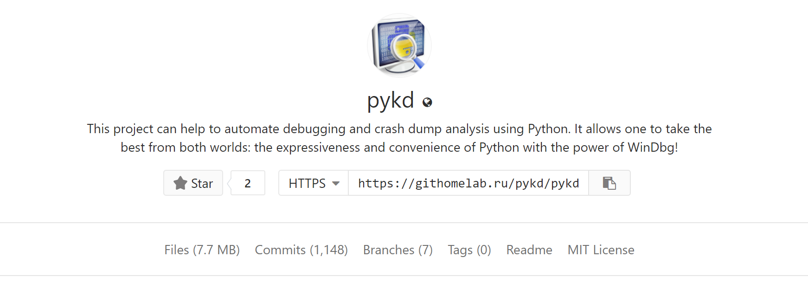

Using windbg script syntax is such annoying thing that almost all reverse engineers have problems dealing with it but automating debugging gives such a power that can’t be easily ignored. A good solution to solve this problem is using the power and simplicity of Python and Windbg together. If you aware, Windbg also supports c-like binaries as extensions so there is a praiseworthy tool called PyKD which does the hard thing and connects Python and Windbg together in a straight and usable way. The purpose of PyKD, as they mentioned, is :
This project can help to automate debugging and crash dump analysis using Python. It allows one to take the best from both worlds: the expressiveness and convenience of Python with the power of WinDbg!
You can download PyKD at this link.
Setup PyKD
To find the main extension binary files, you should find the latest version of the Bootstrapper and download its x86 and x64 versions depending to your needs, after extracting the binary files (pykd.dll) you should load it in Windbg with the following command :
1
.load C:\Users\Sina\Desktop\pykd\x64\pykd.dll
In order to see if it successfully loaded or not, you should execute the following command, if you see something like this, then you’re good to go.
1
2
3
4
5
6
7
8
9
10
11
12
13
14
15
16
17
18
19
20
21
22
23
24
25
26
27
28
29
30
31
32
33
34
35
36
37
38
39
40
41
42
43
44
45
46
47
0:000> !help
usage:
!help
print this text
!info
list installed python interpreters
!select version
change default version of a python interpreter
!py [version] [options] [file]
run python script or REPL
Version:
-2 : use Python2
-2.x : use Python2.x
-3 : use Python3
-3.x : use Python3.x
Options:
-g --global : run code in the common namespace
-l --local : run code in the isolated namespace
-m --module : run module as the __main__ module ( see the python command line option -m )
command samples:
"!py" : run REPL
"!py --local" : run REPL in the isolated namespace
"!py -g script.py 10 "string"" : run a script file with an argument in the commom namespace
"!py -m module_name" : run a named module as the __main__
!pip [version] [args]
run pip package manager
Version:
-2 : use Python2
-2.x : use Python2.x
-3 : use Python3
-3.x : use Python3.x
pip command samples:
"pip list" : show all installed packagies
"pip install pykd" : install pykd
"pip install --upgrade pykd" : upgrade pykd to the latest version
"pip show pykd" : show info about pykd package
If you saw the above command suggestions, one of the interesting commands which can be used to update the PyKD is :
1
!pip install --upgrade pykd
But actually, I prefer to compile the latest version from its source code rather than updating or using the PyKD.dll directly. That’s enough for the setting up and starting, in the rest of the post, we’re getting started with some useful samples of using PyKD. But the right way to get PyKD is to download its latest release and then find a file named “pykd.pyd” among other DLL files then load .pyd file.
Using PyKD Features
This section describes the general functions of PyKD.
Executing Command
The simplest thing is using the PyKD to execute and get the command result, it can be done using the following script in which r is our command and we simply print the result. You can also assign the results to a variable and separate them using Python’s regular string function.
1
2
3
import pykd
print pykd.dbgCommand("r")
You should save the above script into a file (e.g pykd-script.py) then load it in Windbg using the following command :
1
2
3
4
5
6
7
8
9
10
11
0:000> !py c:\users\Sina\desktop\pykd-script.py
rax=0000000000000000 rbx=0000000000000010 rcx=00007fffd3d5a434
rdx=0000000000000000 rsi=00007fffd3de4090 rdi=00007fffd3de4740
rip=00007fffd3d8d02c rsp=0000000b419ef3b0 rbp=0000000000000000
r8=0000000b419ef3a8 r9=0000000000000000 r10=0000000000000000
r11=0000000000000246 r12=0000000000000040 r13=0000000000000000
r14=0000000b41a63000 r15=000001d8da130000
iopl=0 nv up ei pl zr na po nc
cs=0033 ss=002b ds=002b es=002b fs=0053 gs=002b efl=00000246
ntdll!LdrInitShimEngineDynamic+0x34c:
00007fff`d3d8d02c cc int 3
As you see the registers’ value is shown above, I usually use these kinds of scripts with t (step in) and p (step) to simulate an instrumenting environment and check what is going on (e.g a combination of instructions and registers’ value and its corresponding memory values.) even though this operation is too slow but still usable for special cases.
Getting Registers value
A better way of getting registers is using the following sample :
1
2
3
4
5
import pykd
addr = hex(pykd.reg("rsp"))
print(addr)
Continue to run
The following command is the equivalent of go in PyKD :
1
2
pykd.go()
Read the content of the memory
To read the contents of a special virtual address you should use something like this :
1
2
3
4
5
6
import pykd
addr = pykd.reg("rip")
value = pykd.loadBytes(addr,16)
print(value)
The result is :
1
2
0:010> !py c:\users\Sina\desktop\pykd-script.py
[204, 195, 204, 204, 204, 204, 204, 204, 15, 31, 132, 0, 0, 0, 0, 0]
The other variants of Load functions are loadAnsiString,loadBytes,loadCStr,loadChars,loadDWords,loadDoubles and etc.
Comparing Memory
The following script returns true if the contents of memory in two virtual addresses are equal otherwise the result is false.
1
2
3
4
5
6
import pykd
addr1 = 0x00007fffd3d31596
addr2 = 0x00007fffd3d31597
result = pykd.compareMemory(addr1,addr2,100)
print(result)
Detach
As the documentation suggests,
1
pykd.detachAllProcesses() ===> Detach from all process and resume all their threads
&
1
pykd.detachProcess() ===> Stop process debugging
Find Nearest Valid Memory Location
The following script gives the nearest valid memory location, near to 0x0.
1
2
3
4
5
import pykd
result = pykd.findMemoryRegion(0x0)
print(hex(result[0]))
The result is :
1
2
3
4
5
6
7
8
9
10
11
0:003> !py c:\users\Sina\desktop\pykd-script.py
0x5d670000
0:003> dc 0x5d670000
00000000`5d670000 00905a4d 00000003 00000004 0000ffff MZ..............
00000000`5d670010 000000b8 00000000 00000040 00000000 ........@.......
00000000`5d670020 00000000 00000000 00000000 00000000 ................
00000000`5d670030 00000000 00000000 00000000 00000128 ............(...
00000000`5d670040 0eba1f0e cd09b400 4c01b821 685421cd ........!..L.!Th
00000000`5d670050 70207369 72676f72 63206d61 6f6e6e61 is program canno
00000000`5d670060 65622074 6e757220 206e6920 20534f44 t be run in DOS
00000000`5d670070 65646f6d 0a0d0d2e 00000024 00000000 mode....$.......
Finding Function Name
If you want to find the what function is located at a special address based on symbols, you should use findSymbol.
1
2
3
4
5
import pykd
result = pykd.findSymbol(0x00007fffd3d5d960)
print(result)
The result is :
1
2
0:003> !py c:\users\Sina\desktop\pykd-script.py
ntdll!DbgBreakPoint
Get Current Stack Frame
1
2
3
4
5
import pykd
result = pykd.getFrame()
print(result)
The result is :
1
2
3
4
5
6
7
8
9
10
11
0:003> !py c:\users\Sina\desktop\pykd-script.py
Frame: IP=7fffd3d5d960 Return=7fffd3d89bbb Frame Offset=b41effa70 Stack Offset=b41effa78
0:003> dc rsp
0000000b`41effa78 d3d89bbb 00007fff 00000000 00000000 ................
0000000b`41effa88 00000000 00000000 00000000 00000000 ................
0000000b`41effa98 00000000 00000000 00000000 00000000 ................
0000000b`41effaa8 d18e3034 00007fff 00000000 00000000 40..............
0000000b`41effab8 00000000 00000000 00000000 00000000 ................
0000000b`41effac8 00000000 00000000 00000000 00000000 ................
0000000b`41effad8 d3d31551 00007fff 00000000 00000000 Q...............
0000000b`41effae8 00000000 00000000 00000000 00000000 ................
pykd.getStack() also gives a list of stack frame objects.
Last Exception
1
2
3
4
5
import pykd
result = pykd.getLastException()
print(result)
The result is :
1
2
3
4
5
6
7
0:003> !py c:\users\Sina\desktop\pykd-script.py
FirstChance= True
ExceptionCode= 0x80000003
ExceptionFlags= 0x0
ExceptionRecord= 0x0
ExceptionAddress= 0x7fffd3d5d960
Param[0]= 0x0
Finding Function Location
To get where a special function located you can use the following code : It’s like executing x KERNEL32!CreateFileW in Windbg command-line.
1
2
3
4
5
import pykd
result = pykd.getOffset("KERNEL32!CreateFileW")
print(result)
The result is :
1
2
3
4
5
0:003> !py c:\users\Sina\desktop\pykd-script.py
0x7fffd18f0940L
0:003> x kernel32!CreateFileW
00007fff`d18f0940 KERNEL32!CreateFileW (<no parameter info>)
Get System Version
1
2
3
4
5
import pykd
result = pykd.getSystemVersion()
print(result)
example result :
1
2
3
4
5
0:003> !py c:\users\Sina\desktop\pykd-script.py
Major Version: 10
Minor Version: 0
Build: 17134
Description: 17134.1.amd64fre.rs4_release.180410-1804
Getting Page Attributes
One of the important functions of PyKD is getting the page attributes.
1
2
3
4
5
6
7
8
9
10
11
12
13
import pykd
addr1 = pykd.reg("rip")
result = pykd.getVaProtect(addr1)
print("RIP Attributes : " + str(result))
addr2 = pykd.reg("rsp")
result = pykd.getVaProtect(addr2)
print("RSP Attributes : " + str(result))
The result is :
1
2
3
0:003> !py c:\users\Sina\desktop\pykd-script.py
RIP Attributes : PageExecuteRead
RSP Attributes : PageReadWrite
There is also an important function called isValid which can be used to detect whether a virtual address is valid or not.
Reading and writing MSR Register
If you are in a kernel debugging, you could read MSR registers using pykd.rdmsr(value).
1
2
3
4
5
import pykd
result = pykd.rdmsr(0x80000082)
print(result)
To write on a specific MSR you can use pykd.wrmsr(Address, Value). That’s enough for now, I’ll write the rest of this post another time in part 2, so make sure check blog more frequently. :) The second part is also published here!
Comments powered by Disqus.